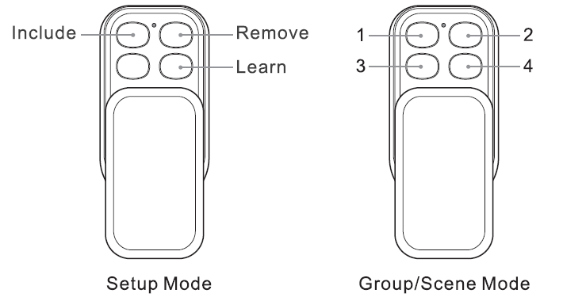
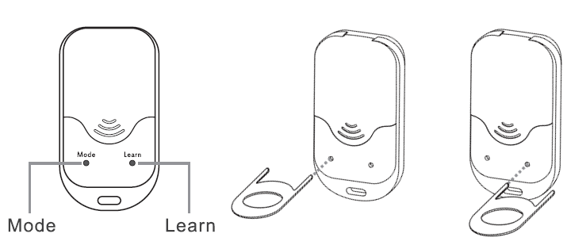
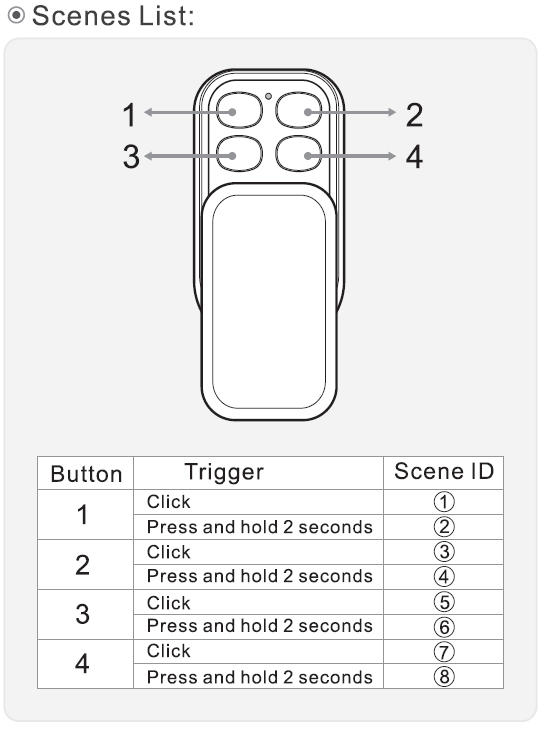

AEO_KFOB
Firmware Version : 0.0 |
 |
Quick Start
R This device is a portable Z-Wave controller. Pressing the "Learn" button on the backside with the button pin will include this device into a Z-Wave network. Pressing the "Learn" button on the backside for 3 seconds will issue a Node Information Frame and keep the device awake to receive configuration commands.
Please refer to the chapters below for detailed information about all aspects of the products usage.
What is Z-Wave?
This device is equipped with wireless communication complying to the Z-Wave standard. Z-Wave is the international standard for wireless communication in smart homes and buildings. It is using the frequency of 868.42 MHz to realize a very stable and secure communication. Each message is reconfirmed (two-way communication) and every mains powered node can act as a repeater for other nodes (meshed network) in case the receiver is not in direct wireless range of the transmitter.
Z-Wave differentiates between Controllers and Slaves. Slaves are either sensors (S) transmitting metered or measured data or actuators (A) capable to execute an action. Controllers are either static mains powered controllers (C) also referred to as gateways or mobile battery operated remote controls (R). This results in a number of possible communication patterns within a Z-Wave network that are partly or completely supported by a specific device.

- Controllers control actuators
- Actuators report change of status back to controller
- Sensors report change of status of measured values to controller
- Sensors directly control actuators
- Actuators control other actuators
- Remote controls send signals to static controllers to trigger scenes or other actions
- Remote controls control other actuators.
There are two different role a controller can have. There is always one single primary controller that is managing the network and including/excluding devices. The controller may have other functions - like control buttons - as well. All other controllers don't manage the network itself but can control other devices. They are called secondary controllers. The image also shows that its not possible to operate a sensor just from a remote control. Sensors only communicate with static controllers.
Product description
The Aeon Labs KeyFob is a Z-Wave Remote Control, which features all the functionality of larger Z-Wave remote controls into a smaller, more modern design. Because of its small size it can be fit on a keyring and taken anywhere with you.
This Key Fob Remote Control can be set up as the primary controller of a Z-Wave network or as an additional Z-Wave controller. This is perfect for including it as a remote control in an existing Z-Wave network. Each of the four buttons on the Key Fob can control multiple Z-Wave devices with a simple push and can control up to 8 different scenes.
Before Device is installed
Please read carefully the enclosed user manual before installation of the radio-actuator, in order to ensure an error-free functioning.
ATTENTION: only authorized technicians under consideration of the country-specific installation guidelines/norms may do works with 230 Volt mains power. Prior to the assembly of the product, the voltage network has to be switched off and ensured against re-switching.
The product is permitted only for proper use as specified in the user manual. Any kind of guarantee claim has to be forfeited if changes, modifications or painting are undertaken. The product must be checked for damages immediately after unpacking. In the case of damages, the product must not be operated in any case. If a danger-free operation of the equipment cannot be assured, the voltage supply has to be interrupted immediately and the equipment has to be protected from unintended operation.
Installation Guidelines

- Slide the rear battery cover from your remote to open the battery compartment.
- Insert the provided CR 2450 battery into the compartment, ensuring that the + side of the battery is facing up.
- Reattach the rear battery cover to your remote and firmly close it.
Behavior within the Z-Wave network
I On factory default the device does not belong to any Z-Wave network. The device needs to join an existing wireless network to communicate with the devices of this network. This process is called Inclusion. Devices can also leave a network. This process is called Exclusion. Both processes are initiated by the primary controller of the Z-Wave network. This controller will be turned into exclusion respective inclusion mode. Please refer to your primary controllers manual on how to turn your controller into inclusion or exclusion mode. Only if the primary controller is in inclusion or exclusion mode, this device can join or leave the network. Leaving the network - i.e. being excluded - sets the device back to factory default.
If the device already belongs to a network, follow the exclusion process before including it in your network. Otherwise inclusion of this device will fail. If the controller being included was a primary controller, it has to be reset first.
Your Key Fob works perfectly as an additional remote control within an existing Z-Wave network. To include it into an existing Z-Wave network do the following steps:
- Open the main panel of the Key Fob so that you can see its LED.
- Bring your primary Z-Wave controller in the inclusion mode.
- Press the Learn button on the backside of the Key Fob.
- If succesful, the green and red LED on the front of the Key Fob will alternatively blink followed by the green LED illuminating for 2 seconds.
- If not succesful, the red LED will illuminate for 2 seconds.
To exclude the Key Fob from the Z-Wave network repeat the steps above.
Operating the device

The Aeon Labs Key Fob can operate in three different modes: SETUP, GROUP and SCENE Mode.
When the device is first time powered up it is in Setup Mode. This allows you to setup the Key Fob and do everything from creating a new Z-Wave network through to removing devices from one. In this mode the buttons operates as shown in the picture.

To change your Key Fob to Group Mode open the main panel of the device so that you can see the internal light. Use the provided Button pin to press the Mode button. The LED will illuminate for a second to confirm that the mode has been changed successfully to Group Mode.
If you wish to change your Key Fob to Scene Mode, you'll need to configure it with your Z-Wave gateway. Please refer to the gateway's manual for this.
Setup Mode
For an existing Z-Wave network
Your Key Fob works perfectly as an additional remote control within an existing Z-Wave network.
For a new Z-Wave network
Your Key Fob can be set as the primary controller of a Z-Wave network. This is recommended where you don't already have a Z-Wave network set up and you're either starting out or intending to set up only a small system. As a primary controller of a new Z-Wave network, your Key Fob will be able to operate in Setup and Group Mode.
In this case you need to associate your Z-Wave devices with the Key Fob. For details refer to the "Inclusion" part of this manual. Once this is done the Key Fob will work as the primary controller and as a remote control within the Z-Wave network.
Group Mode
When using the Key Fob in Group Mode you are able to control different Z-Wave devices with each of your remote's 4 buttons. In Group Mode each button is capable of controlling up to 50 Z-Wave devices.
For association do the steps as descriped in the chapter assiciotions.
Now you can control the Z-Wave devices you have associated with the Key Fob. By pushing the particular button the device will not only switch on or off, but it is to the level you selected in the earlier steps. With the Key Fob you have a further funcion to control multi-level devices. By holding a button for a particular device on the Key Fob the button will send up and down instructions to any compatible device. Holding the button of a dimmable light will dim the brightness up or down.
In order to disassociate devices with the Key Fob do the same steps like associating.
Scene Mode
When using your Key Fob in the Scene Mode you are able to control multiple Z-Wave devices with each of the 4 buttons of the remote. In Scene Mode each button is capable of controlling two scenes. Each scene can contain 1 to 5 Z-Wave devices. Use your gateway to configure scenes in the Z-Wave network.

Every of the 4 action buttons can control 2 scenes. To use the primary scene single click on the button. To use the secondary scene press and hold the button for 2 seconds and release it. The numbering of the scenes (shown in the picture) is important to configure the scenes with your gateway.
Node Information Frame
NI The Node Information Frame is the business card of a Z-Wave device. It contains information about the device type and the technical capabilities. The inclusion and exclusion of the device is confirmed by sending out a Node Information Frame. Beside this it may be needed for certain network operations to send out a Node Information Frame.
A single click at the "Learn" button for 5 seconds sends a Node Information Frame.
Special Functions as Z-Wave Controller
As long as this device is not included into a Z-Wave network of a different controller it is able to manage its own Z-Wave network as primary controller. As a primary controller the device can include and exclude other devices in its own network, manage associations, and reorganize the network in case of problems. The following controller functions are supported:
Include other device in own network
CI Communication between two Z-Wave devices only works if both belong to the same wireless network. Joining a network is called inclusion and is initiated by a controller. The controller needs to be turned into the inclusion mode. Once in this inclusion mode the other device needs to confirm the inclusion - typically by pressing a button.
When your Key Fob is setup as the primary controller in the Z-Wave network it's able to add and remove devices in the network.
Inclusion
- Bring your Key Fob in the Setup Mode.
- Take your Key Fob to within 3 meters of the device you wish to control.
- Slide open the main panel of your Key Fob and press the Include button. The green LED will blink. If the red LED lights up for 2 seconds the Key Fob is set as secondary controller in the Z-Wave network and it is notable to add or remove devices in the network.
- Press the dedicated button on the device you wish to add.
- When the device was succesfully included the green LED on the Key Fob will light up for 2 seconds and then begin to blink again. If the device wasn't succesfully added, the red LED will light up for 2 seconds and then begin to blink again.
Repeat the steps to include further Z-Wave devices.
Once you have finished, press any button on the Key Fob to exit the inclusion mode.
If current primary controller in your network is in special SIS mode this and any other secondary controller can also include and exclude devices.
To become primary a contoller have to be resetted and then include a device.
Exclude device from network
The primary controller can exclude devices from the Z-Wave network. During exclusion the relationship between the device and the network of this controller is terminated. No communication between the device and other devices still in the network can happen after a successful exclusion. The controller needs to be turned into the exclusion mode. Once in this exclusion mode the other device needs to confirm the exclusion - typically by pressing a button.
Attention: Removing a device from the network means that it is turned back into factory default status. This process can also exclude devices from it's previous network.
Exclusion
- Bring your Key Fob in the Setup Mode.
- Take your Key Fob to within 3 meters of the device you wish to control.
- Slide open the main panel of your Key Fob and press the Remove button. The red LED will blink. If the red LED lights up for 2 seconds the Key Fob is set as secondary controller in the Z-Wave network and it is notable to add or remove devices in the network.
- Press the dedicated button on the device you wish to remove.
- When the device was successfully excluded the green LED on the Key Fob will light up for 2 seconds and then the red LED begins to blink. If the device wasn't succesfully removed, the red LED will light up for 2 seconds and then begin to blink again. In this case repeat the process from step 1 again.
Repeat the steps to exclude further Z-Wave devices.
Once you have finished, press any button on the Key Fob to exit the exclusion mode.
Shift Primary Role to a different Controller
The device can hand over its primary role to another controller and become secondary controller.
The primary shift is initiated on the device by pressing the "Learn" button.
Set association between two device in Z-Wave network
CA The controller is able to set association between two other devices in the network. The controller is turned into an association mode both devices are announced by pressing a button. After both association partners are known the controller will perform all necessary steps to set the association.
During the following steps you'll associate Z-Wave device with a particular button and also determine precisely how the button will affect the device.
- Bring your Key Fob in the Group Mode.
- Ensure that the Z-Wave device you want to control is turned off.
- Take your Key Fob to within 3 meters of the device you wish to control.
- Slide open the main panel of your Key Fob.
- Press, hold and do not release for several steps one of the 4 buttons that you want to use to control your Z-Wave device. The green LED will blink quickly when it's ready to associate devices with a button.
- Press the Z-Wave button on the device that you wish to control to associate it.
- The green LED on the Key Fob will stop blinking and stays on to indicate that the device now can be controlled with the Key Fob.
- With the button still pressed change the Z-Wave device's status to match the desired function you wish to have. Also you can set the multi-level for devices like dimmers or windows blinds to the desired level.
- Now release the button that you're holding down on your Key Fob.
Repeat the steps to associate further Z-Wave devices with any of your Key Fob's buttons.
Reset the Controller
Slide open the main panel of your Key Fob and press the Mode button on the backside of the device for 20 seconds. When the reset was successfully the green and red LED on the front of the Key Fob will alternatively blink followed by the green LED illuminating for 2 seconds.
Command Classes
Supported Command Classes- Association (version 1)
- Basic (version 1)
- Configuration (version 1)
- Manufacturer Specific (version 1)
- Multilevel Switch (version 1)
- Version (version 1)
- Association (version 1)
- Basic (version 1)
- Multilevel Switch (version 1)
Technical Data
| Frequency | 868.42 MHz (SRD Band) |
| Wireless Range | up to 100 m outside, on average up to 20 m inside buildings |
| Explorer Frame Support | No |
| SDK | 5.02 |
| Device Type | Portable controller |
| Generic Device Class | Remote Controller |
| Specific Device Class | Portable Remote Controller |
| Routing | No |
| FLiRS | No |
| Firmware Version | 0.0 |
Explanation of Z-Wave specific terms
- Controller — is a Z-Wave device with capabilities to manage the network. Controllers are typically Gateways, Remote Controls or battery operated wall controllers.
- Slave — is a Z-Wave device without capabilities to manage the network. Slaves can be sensors, actuators and even remote controls.
- Primary Controller — is the central organizer of the network. It must be a controller. There can be only one primary controller in a Z-Wave network.
- Inclusion — is the process of bringing new Z-Wave devices into a network.
- Exclusion — is the process of removing Z-Wave devices from the network.
- Association — is a control relationship between a controlling device and a controlled device.
- Wakeup Notification — is a special wireless message issued by a Z-Wave device to annonces that is is able to communicate.
- Node Information Frame — is a special wireless message issued by a Z_Wave device to announce its capabilities and functions.
Disposal Guidelines
The product does not contain hazardous chemicals.
Do not dispose of electrical appliances as unsorted municipal waste, use separate collection facilities. Contact your local government for information regarding the collection systems available. If electrical appliances are disposed of in landfills or dumps, hazardous substances can leak into the groundwater and get into the food chain, damaging your health and well-being.